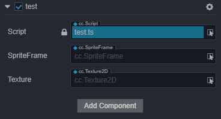
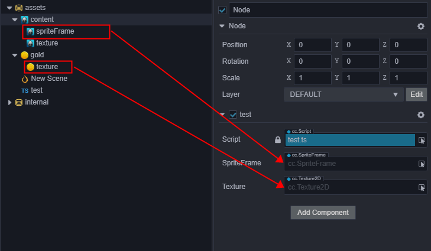
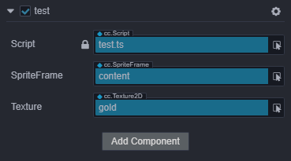
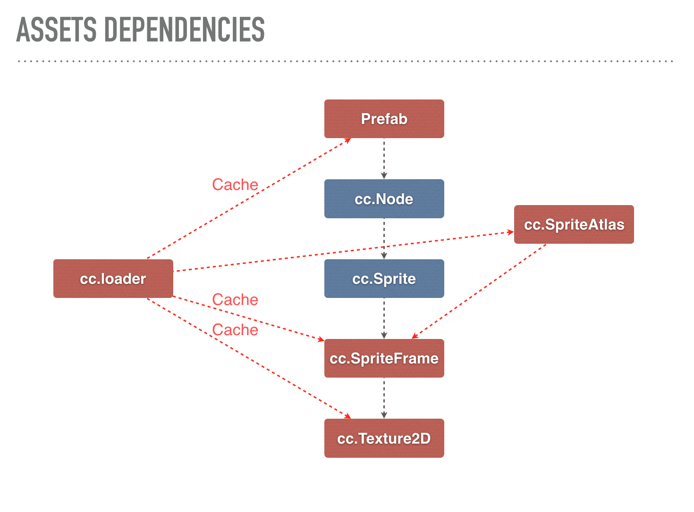

Obtaining and Loading assets
Cocos Creator 3D uses the same asset management mechanism as Cocos Creator. In this section, we will introduce:
- Declaration of asset attributes
- How to set assets in the Property Inspector
- Loading assets dynamically
- Loading remote assets and device assets
- Dependence and releasing assets
Declaration of asset attributes
In Cocos Creator 3D, all types that inherit from Asset are collectively called assets, such asTexture2D, SpriteFrame,AnimationClip, Prefab, etc. Loading assets is unified and interdependent assets can be automatically preloaded.
For example: when the engine is loading the scene, it will automatically load the assets associated with the scene first. If these assets are associated with other assets, the other will be loaded first, and the scene loading will end after all loading is completed.
You can define an Asset property in the script like this:
//test.ts
import { _decorator, Component, Node, SpriteFrame } from "cc";
const { ccclass, property } = _decorator;
@ccclass("test")
export class test extends Component {
@property({type: SpriteFrame})
private spriteFrame: SpriteFrame = null;
}
How to set Assets in the Property inspector
As long as the type is defined in the script, you can easily set the asset directly in the Property inspector. Suppose, we create a script like this:
//test.ts
import { _decorator, Component, Node, SpriteFrame, Texture2D } from "cc";
const { ccclass, property } = _decorator;
@ccclass("test")
export class test extends Component {
@property({type: Texture2D})
private texture: Texture2D = null;
@property({type: SpriteFrame})
private spriteFrame: SpriteFrame = null;
}
After adding it to a node, it looks like this in the Property Inspector:

Next, we drag a Texture and a SpriteFrame from the Assets Panel into the corresponding properties of the Property Inspector:

Resulting in：

This allows you to get and set assets directly within a script:
start () {
let spriteFrame = this.spriteFrame;
let texture = this.texture;
}
Although it is intuitive to set assets in the Attributes Inspector, the assets can only be set in the Scene, in advance. This means there is no way to switch assets dynamically. If you need to switch assets dynamically, take a look at this next section on Dynamic loading.
Dynamic loading
We have example for asset loading, please see these test-case-3d(AssetLoading)
There are two points to note when loading assets dynamically.
First, the resources folder needs to be created manually inside the resources folder and must be located in the root directory, like this:

All assets that need to be dynamically loaded through a script must be placed in the resources folder or its subfolders.
Note: The assets in the folder can refer to other assets outside the folder, and can also be referenced by external scenes or assets. When the project is built, except for the scenes that have been checked in the Build panel, all assets in the
resourcesfolder, together with the assets outside theresourcesfolder that are dependent by necessary assets, other assets will be deleted.Note: If an asset is only depended on by other assets and does not need to be loaded directly by
loader.loadRes, then please do not put it in theresourcesfolder. Doing so, the size of the package body andsettings.jswill be increased, and the useless assets in theresourcesfolder will not be automatically removed during the build process. At the same time, during the build process, JSON's automatic merge strategy will also be affected, and it is not possible to merge fragmented JSON as much as possible.
Second, The load process of Cocos Creator 3D is always asynchronous. You need to get the loaded assets in the callback function. This is done because there is no other asset preload list except the assets associated with the scene, and dynamically loaded assets that are truly dynamically loaded.
Loading Asset Dynamically
Cocos Creator 3D provides loader.loadRes API to specifically load those assets located in the assets directory. Unlike loader.load, loadRes can only load a single asset at a time. When calling, you only need to pass in the path of the relative assets, and the end of the path cannot include the file extension.
// load the Prefab
loader.loadRes("test assets/prefab", Prefab , (err: any, prefab: Prefab) => {
const newNode = instantiate(prefab);
director.getScene().addChild(newNode);
});
// load the AnimationClip
loader.loadRes("test assets/anim", AnimationClip , (err: any, clip: AnimationClip) => {
this.node.getComponent(AnimationComponent).addClip(clip, "anim");
});
Loading a SpriteFrame or a Texture2D
After the image is set to a spriteframe, texture or other image types, an asset of the corresponding type will be generated in the Assets Panel. But if you load test assets/image directly, the resulting type will be an ImageAsset. You must add the asset type, after the image path, in-order to load the sub-asset of the corresponding asset generated by the image. If you are not sure about the path of the corresponding asset, you can view it in settings.js when running or previewing:
// load a SpriteFrame，image is ImageAsset，spriteFrame is image/spriteFrame, texture is image/texture
loader.loadRes("test assets/image/spriteFrame", SpriteFrame ,(err: any, spriteFrame: SpriteFrame) => {
this.node.getComponent(SpriteComponent).spriteFrame = spriteFrame;
});
// load a texture
loader.loadRes("test assets/image/texture", Texture2D ,(err: any, texture: Texture2D) => {
const spriteFrame = new SpriteFrame();
spriteFrame.texture = texture;
this.node.getComponent(SpriteComponent).spriteFrame = spriteFrame;
});
If a type parameter is specified, an asset of the specified type will be found under the path. When you need to get a "sub-asset" (such as getting the sub-asset SpriteFrame of ImageAsset), you need to specify the path of the sub-asset.
Loading a SpriteFrame from Atlas
For an atlas imported from a third-party tool such as Texturepacker, if you want to load the SpriteFrame, you can only load the atlas first, and then get the SpriteFrame. This is a special case.
// load SpriteAtlas, and get one of them SpriteFrame
// Note Atlas resource file (plist) usually of the same name and a picture file (PNG) placed in a directory, So should need to in the second parameter specifies the resource type.
loader.loadRes("test assets/atlas.plist", SpriteAtlas, (err: any, atlas: SpriteAtlas) => {
const frame = atlas.getSpriteFrame('sheep_run_0');
this.node.getComponent(SpriteComponent)..spriteFrame = frame;
});
Asset release
If a single asset loaded by loadRes, needs to be released, you can call loader.releaseRes, and releaseRes can pass in the same path and type parameters asloadRes.
loader.releaseRes("test assets/image/spriteFrame");
loader.releaseRes("test assets/anim");
Alternatively, you can use loader.releaseAsset to release a specific instance of an aseset.
loader.releaseAsset(spriteFrame);
Special note, assets dynamically loaded by using cc.loader.loadRes or cc.loader.loadResDir, will not be release when scene switching, remain not released by default. Use setAutoRelease to change the default behavior on a single asset, to force preserve or release specified asset when scene switching.
loader.setAutoRelease(spriteFrame, true);
Batch loading of assets
loader.loadResDir can load multiple assets in the same path:
// load the test assets all assets in the directory
loader.loadResDir("test assets", (err: any, assets: Array<Asset>) => {
// ...
});
// load the test assets, all SpriteFrame in the directory,
// and get their path
loader.loadResDir("test assets", SpriteFrame, (err: any, assets: Array<Asset>, urls: Array<string>) => {
// ...
});
Loading remote and local device assets
Cocos Creator 3D supports loading remote texture assets. This is a friendly approach for loading textures that need to be requested from the server, such as user avatars. It should be noted that this requires developers to call loader.load directly. At the same time, if the user downloads the assets to the local device storage in other ways, they also need to use the same API to load. The APIs such as loadRes above are only applicable to the assets in the application package and the hot-updated local assets. Here is the usage of this API:
// remote url of image asset
const remoteUrl1 = "http://unknown.org/someres.png";
loader.load(remoteUrl1, (err: any, image: ImageAsset) => {
// Use imageAsset to create sprite frame or texture
});
// Remote URL without image suffix, you must specify the type
// of remote image file
const remoteUrl2 = "http://unknown.org/emoji?id=124982374";
loader.load({url: remoteUrl2, type: 'png'}, (err: any, image: ImageAsset) => {
// Use imageAsset to create sprite frame
});
There are still some restrictions on using manual asset loading. The ones that have a greater impact on developers are:
- This loading method only supports native asset types such as images, sounds, text, and does not support direct loading and parsing of assets such as
SpriteFrame,SpriteAtlas, andTilemap(these require AssetBundle support in future versions) - Remote loading on the web side is restricted by the browser's CORS cross domain policy. If the other server prohibits cross domain access, then it will fail to load, and due to the limitation of WebGL security policies, even if the other server allows the http request to succeed, it cannot be rendered.
Dependency and releasing of assets
After loading the assets, all assets will be temporarily cached in the loader to avoid sending meaningless http requests when the assets are repeatedly loaded. Of course, the cached content will occupy memory, and some assets may no longer be needed by the user. If you want to release them, here are some things to note when doing asset releasing.
First and foremost: assets are interdependent. For example, in the figure below, the Node in the Prefab asset contains the Sprite component. The Sprite component depends on the SpriteFrame, the SpriteFrame asset depends on the Texture asset, and as mentioned the Prefab , SpriteFrame, and Texture assets are cached by the loader. The advantage of this is that there may be another SpriteAtlas asset that depends on the same SpriteFrame and Texture. In this case, when you manually load this SpriteAtlas, you do not need to re-request the texture asset, the loader will automatically use the assets in the cache.

After understanding the mutual reference of assets, the problem of asset releasing is also looming. When you choose to release a Prefab, we will not automatically release other assets it depends on. Why? There may be other uses for these dependent assets . When users release assets, they often ask us, why do I release the assets, but the memory usage is still high? The reason is that the basic assets, such as textures that actually occupy memory, will not be released when you release Prefabs or a SpriteAtlas.
Second: Object references cannot be tracked in JavaScript.
In JavaScript, due to its weakly typed nature, does not include memory management functions. The memory of all objects is managed by the garbage collection mechanism. This causes the JavaScript layer logic to never know when an object will be released. The engine cannot manage external object references to assets through a mechanism similar to reference counting. The engine cannot count whether assets are no longer needed. The current design of the loader requires the user to manage the assets according to the game logic. The user can decide that certain assets and the assets it depends on are no longer needed and immediately release their cache in the loader. You can also choose to prevent some shared assets from being released when releasing dependent assets. Here is a simple example:
// Release a texture directly
loader.release(texture);
// release a prefab and all assets it depends on
const deps = loader.getDependsRecursively('prefabs/sample');
loader.release(deps);
// If there are some assets in this prefab that are shared with other
// parts of the scene, you don't want them to be released, you can delete
// this asset from the dependency list.
const deps = loader.getDependsRecursively('prefabs/sample');
const index = deps.indexOf(texture2d._uuid);
if (index !== -1)
deps.splice(index, 1);
loader.release(deps);
One last note: JavaScript's garbage collection is deferred.
Imagine a situation where, after you released the loader's reference to an asset, the game logic requests the asset again. At this point, garbage collection has not started (the timing of garbage collection is uncontrollable), or somewhere in your game logic still holds a reference to this old asset. This means that this asset still exists in memory, but the loader has no access, it will be reloaded. This causes this asset to have two identical copies in memory, wasting memory. This isn't a problem for just one asset, but if there are many similar assets or assets being loaded more than once, may put a strain on the available memory. If your memory runs high please carefully check the game logic for leaks. If not, the garbage collection mechanism will normally reclaim the memory.
Continue to the Event documentation.